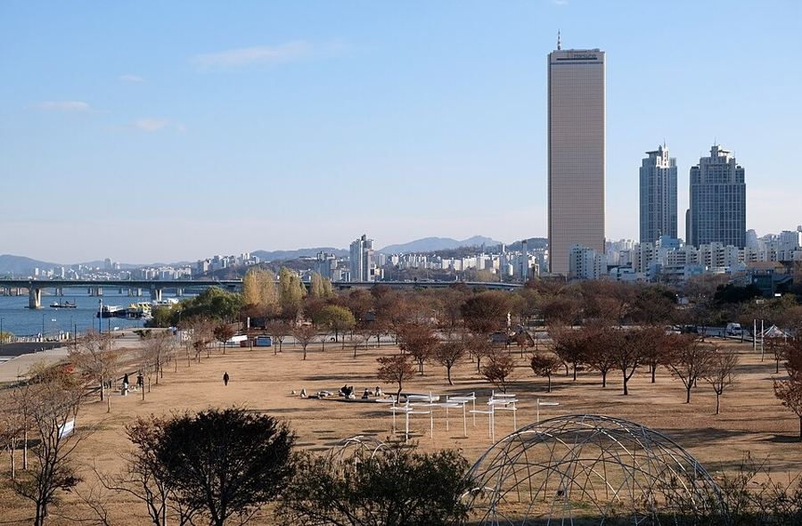

1
Yeouido Hangang Park
여의도한강공원
Seoul's best-known riverside park: river walks, bike rental, Hangang Bus & cruise piers and sunset over the Han.
📍330 Yeouidong-ro, Yeongdeungpo-gu, Seoul (Yeouido Info Center)
서울 영등포구 여의동로 330 한강사업본부 여의도안내센터
서울 영등포구 여의동로 330 한강사업본부 여의도안내센터
🚇Line 5 Yeouinaru Stn, Exit 2 or 3 — 1 min walk
ℹOpen 24 h · free
Open in Google Maps ↗